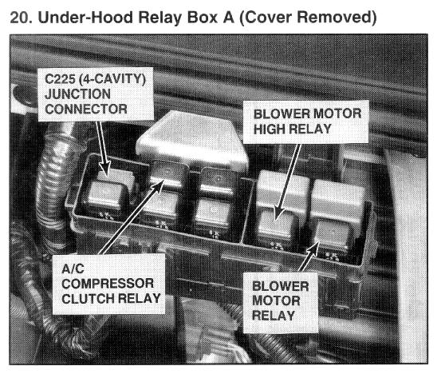

Operation CHARM
: Car repair manuals for everyone.
Home
>>
Acura
>>
1994
>>
NSX V6-3.0L DOHC
>>
Repair and Diagnosis
>>
Starting and Charging
>>
Power and Ground Distribution
>>
Multiple Junction Connector
>>
Locations
>>
Junction Connector
>>
Photo 20
Photo 20
Photo 20 - Compressor Clutch Relay:

Under-Hood Relay Box A (Cover Removed)